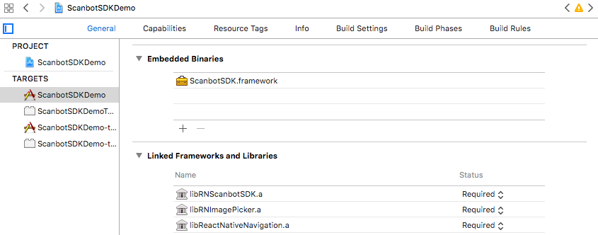
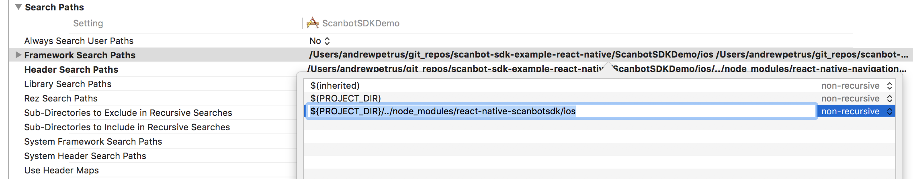
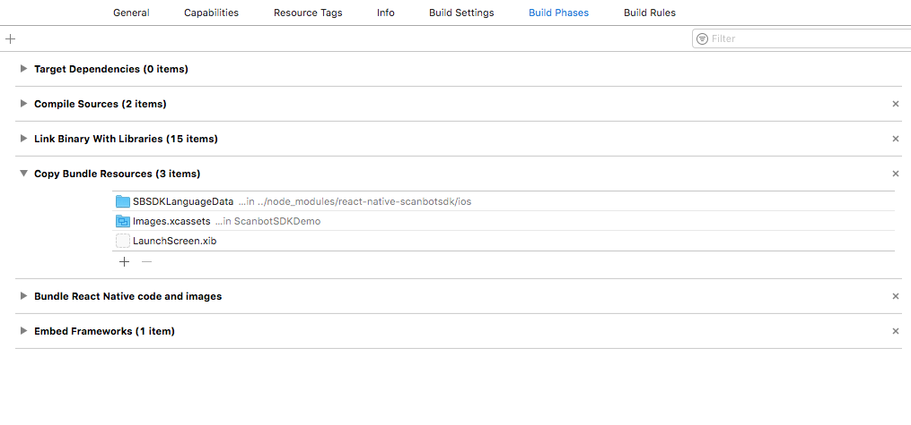
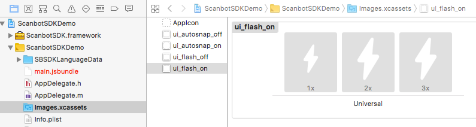

Scanbot SDK React Native Module
Introduction
The Scanbot SDK brings scanning and document creation capabilities to your mobile apps. It contains modules which are individually licensable as license packages. For more details visit our website https://scanbot.io/sdk.html
This module provides implementations of Scanbot SDK for iOS and Android.
Following Package I + II functionality is covered by this module:
Package I
- Camera UI with user guidance for document scanning
- Cropping UI
- Document Detection
- Image Filters
- PDF Creation
Package II
- OCR
Requirements
Tools
- Node.js, npm
- React Native 0.47+ (lasest available version is highly recommended)
- Android SDK (API Level 16+), Platforms and Developer Tools
- Xcode + Xcode Command Line Tools (for iOS Apps)
Supported Mobile Platforms
- Android 4.1 (API Level 16) and higher
- iOS 8 and higher
Please note:
- The Scanbot SDK module is available only for Android and iOS
- The module does not work on other platforms like Windows Phone, Desktop or WebApps
- We don’t support rooted Android devices (custom ROMs)
Hardware
- Smartphones and Tablets with a rear-facing camera with autofocus
Simulators / Emulators
While it is possible to test your App with the Scanbot SDK module on simulators/emulators, we strongly recommend to use real Android/iOS devices. Depending on the emulated Camera you may not be able to test/evaluate the full functionality of the Scanbot SDK module.
Example App
Check out our Example App on GitHub:
Installation
The Scanbot SDK module is available as npm package.
You can simply install and add it to your App by following command:
npm install --save react-native-scanbot-sdk
After the installation of the npm package you have to link the native dependencies of the Scanbot SDK module into the native build files of your project:
react-native link react-native-scanbot-sdk
Android Settings
Scanbot SDK Maven repositories
This React Native module depends on Scanbot SDK for Android (supported architectures are armeabi-v7a and x86).
The Scanbot SDK for Android is distributed through our private Maven repositories.
Please add these repositories in your android/build.gradle file in the section allprojects > repositories:
allprojects {
repositories {
mavenLocal()
jcenter()
maven {
// All of React Native (JS, Obj-C sources, Android binaries) is installed from npm
url "$rootDir/../node_modules/react-native/android"
}
// Scanbot SDK Maven repositories:
maven {
url 'https://nexus.scanbot.io/nexus/content/repositories/releases/'
}
maven {
url 'https://nexus.scanbot.io/nexus/content/repositories/snapshots/'
}
}
}
Tuning the Android Manifest
Since your application works with images it is highly recommended to add the property android:largeHeap="true"
in the <application> element of your android/app/src/main/AndroidManifest.xml file.
Processing images is a memory intensive task and this property will ensure your app has enough heap allocated to avoid OutOfMemoryError exceptions.
<application
android:largeHeap="true"
...
</application>
iOS Settings in Xcode
After installing and linking the module, your Xcode project must be configured to utilize the Scanbot SDK Framework for iOS.
Please make sure RNScanbotSDK.xcodeproj was added correctly by react-native link command as a sub-project in Libraries folder of your project.
Also, libRNScanbotSDK.a should be available in the Linked Frameworks and Libraries section of your application main target.
And last but not least, you need to add ScanbotSDK.framework to your application project’s Embedded Binaries section.
-
Open the generated Xcode project file with Xcode IDE:
<YOUR_APP_PROJECT_PATH>/ios/<YOUR_APP_NAME>.xcodeproj -
Go to
TARGETSsettings and find the sectionEmbedded Binaries. Then add theScanbotSDK.framework(situated innode_modules/react-native-scanbot-sdk/ios) toEmbedded Binaries. TheScanbotSDK.frameworkis provided with the Scanbot SDK React Native Module.

- Point Xcode to correct path for framework searching. Navigate to “Search Paths” section of your target’s “Build Settings” and add a new string to “Framework Search Paths”:
${PROJECT_DIR}/../node_modules/react-native-scanbot-sdk/ios

Also, if you are planning to use the OCR functionality of Scanbot SDK, please add SBSDKLanguageData folder to “Copy Bundle Resources” build phase in project settings.

Please note: If ScanbotSDK.framework is put into “Linked Frameworks and Libraries” and not into “Embedded Binaries”, then the module will not work. The project will compile but your App will crash right after the start!
Images
Also in order to use image assets coming with the Scanbot SDK React Native Module you need to add these images manually to your Images.xcassets from module’s Images directory node_modules/react-native-scanbot-sdk/ios/Images/.
Create following Image Set names in your project and add corresponding images:
ui_autosnap_off(auto-snapping toggle button OFF state)ui_autosnap_on(auto-snapping toggle button ON state)ui_flash_off(flash toggle button OFF state)ui_flash_on(flash toggle button ON state)
These images are used in the ScanbotCameraView as toggle buttons for flash light and auto-snapping.

Permissions
In order to operate correctly an application that utilizes ScanbotSDK module must have all required permissions to your App. Here is a listing of those permissions:
Android (must be added in your android/app/src/main/AndroidManifest.xml file)
<uses-permission android:name="android.permission.CAMERA" />- This permission is used for the camera views.<uses-feature android:name="android.hardware.camera" />- Camera hardware features.<uses-permission android:name="android.permission.WRITE_EXTERNAL_STORAGE" />- Required to handle temporary files (e.g. PDF creation).<uses-permission android:name="android.permission.READ_EXTERNAL_STORAGE" />- Required to handle temporary files (e.g. PDF creation).
iOS (must be added in your Info.plist file)
NSCameraUsageDescription- “Privacy - Camera Usage Description”. As value describe why your app wants to access the device’s camera.
Module Contents
-
ScanbotSDK main module- This module provides the Scanbot SDK functionality for image operations (e.g. filter, PDF creation, etc.) -
ScanbotCameraView UI component- Provides the functionality for Camera UI. -
ScanbotCroppingView UI component- Provides the functionality for cropping UI.
API Reference
ScanbotSdk- .initializeSDK -
function - .isLicenseValid -
function - .detectDocument -
function - .rotateImage -
function - .applyImageFilter -
function - .createPDF -
function - .getOCRConfigs -
function - .performOCR -
function - .cleanup -
function - .DetectionResult -
string - .ImageFilter -
string - .OCROutputFormat -
string
- .initializeSDK -
Getting Started
Importing Modules
import {
ScanbotSDK,
ScanbotCameraView,
ScanbotCroppingView,
...
} from 'react-native-scanbot-sdk';
Initialize SDK
ScanbotSDK.initializeSDK(options, successCallback, failureCallback)
The Scanbot SDK must be initialized before usage. Make sure to run the initialization only once per app lifetime.
Callbacks:
successCallback : function(result)
result- Contains a simple success message as string.
failureCallback : function(error)
error - Contains the error message as string.
Example code for initialization:
import {ScanbotSDK} from 'react-native-scanbot-sdk';
initializeSDK() {
let options = {
licenseKey: '', // optional license key (empty for trial mode)
loggingEnabled: true
}
ScanbotSDK.initializeSDK(options, (result) => {
// Scanbot SDK successfully initialized
console.log(result);
}, (error) => {
// Scanbot SDK initialization failed
console.log(error);
});
}
License Key
You can test all Scanbot SDK module features and develop your apps without a license. However, if you do not specify the license key when initializing the SDK, it will work in trial mode (trial period of 1 minute). To get another trial period you have to restart your app.
If this is not enough for you, contact us at sdk@scanbot.io and we’ll give you a free no strings attached trial license for a longer period. In order to run the Scanbot SDK module functionality within your production app you have to purchase and use a valid Scanbot SDK license.
Each license key is valid only to your apps bundle identifier. The license also defines which modules you are allowed to use. The usage of unlicensed modules will log an error to the console and terminate the app. If your license has expired any calls of the Scanbot SDK module will terminate your app.
Example code for defining and using the license key:
// Please note: this is just an example license key string (it's not a valid license)
var myLicenseKey =
"fXbN2PmyqEAZ+btdkSIS36TuX2j/EE5qxVNcZMXYErbLQ" +
"3OBnE10aOQxYI8L4UKwHiZ63jthvoFwUevttctBk0wVJ7Z" +
"+Psz3/Ry8w7pXvfpB1o+JrnzGGcfwBnRi/5raQ2THDeokR" +
"RB1keky2VBOFYbCfYt3Hqms5txF2z70PE/SBTMTIVuxL7q" +
"1xcHDHclbEBriDtrHw8Pmhh9FqTg/r/4kRN/oEX37QGp+Y" +
"3ogwIBbSmV+Cv+VuwtI31uXY3/GkyN/pSJZspIl+exwQDv" +
"O0O1/R/oAURpfM4ydaWReRJtjW8+b1r9rUgPERguaXfcse" +
"HlnclItgDfBHzUUFJJU/g==\nU2NhbmJvdFNESwppby5zY" +
"2FuYm90LmRlbW8ueGFtYXJpbgoxNDg0NjExMTk5CjcxNjc" +
"KMw==\n";
let options = {
licenseKey: myLicenseKey
loggingEnabled: true
}
ScanbotSDK.initializeSDK(options, (result) => {
console.log(result);
}, (error) => {
console.log(error);
});
Purchase a License
You can check and purchase the Scanbot SDK licenses here: https://scanbot.io/sdk.html.
To request a trial license for a longer period or purchase a production license you have to provide us the bundle identifier of your app. Please find this identifier in the project settings.
Trial Licenses
You can get a free no strings attached trial license. Please kindly note that this license can only be used in a development and staging environment. You are not allowed to publish your app to the App Store, Play Store or any 3rd party Android App Store with a trial license.
Logging
When initializing the Scanbot SDK you can enable logging of the SDK. By default logging is disabled.
let options = {
licenseKey: myLicenseKey
loggingEnabled: true
}
ScanbotSDK.initializeSDK(options, (result) => {
console.log(result);
}, (error) => {
console.log(error);
});
On Android logs are printed into LogCat as well as saved on the device. You can find them in Environment.getExternalStorageDirectory()/debug_logs/[package_name]. Usually it is /sdcard/debug_logs/[package_name].
The easiest way to check the log outputs on Android is to use the Android Debug Bridge (adb).
(e.g. $ adb -s <DEVICE_ID> shell "logcat")
On iOS all logs are printed to the console. Please use Xcode to check the log outputs.
You can also see application logs in the terminal by issuing react-native log-android or react-native log-ios.
There will be no log files created by the Scanbot SDK module.
Please note: While it may be useful for development, consider switching logging OFF in production builds for security and performance reasons!
Updating the license in production apps
To renew an expired license or extend a valid license with new Scanbot SDK features, you will have to update your app in the App Store or Play Store. The expiration date and the feature list of a license are an encrypted data part of the license key string. Which means a renewal or extension of a license will cause a new license key string to be generated.
License check in production apps
If your Scanbot SDK license has expired, any call of the Scanbot SDK API will terminate your app or result in an error.
To prevent this you should always check for license expiration during the runtime by calling the method ScanbotSDK.isLicenseValid(..).
If the result of the successCallback returns false, you should disable any usage of the Scanbot SDK functions or UI components in your app.
We highly recommend to implement a suitable handling of this case in your app!
ScanbotSDK.isLicenseValid(successCallback, failureCallback)
Use this function to check the current state of the license. The SDK must be initialized.
Callbacks:
callback : function(result)
result.isLicenseValid- Contains a boolean status value of the license.truemeans the Scanbot SDK license is valid and all features can be used normally.falsemeans the license is not valid and any call of the Scanbot SDK API will terminate your app or result in an error.
Example code for checking the license status:
let options = {
licenseKey: myLicenseKey
loggingEnabled: true
}
ScanbotSDK.initializeSDK(options, (result) => {
ScanbotSDK.isLicenseValid(function(result) {
if (result.isLicenseValid != true) {
licenseStatus = "Invalid"
}
}, (error) => {
console.log(error);
})
}, (error) => {
console.log(error);
});
Camera UI for document scanning
The Scanbot SDK module provides a ready-to-use Camera UI component, ScanbotCameraView, for guided, automatic document scanning.
The Camera UI contains:
- A live preview of the camera with detected polygon
- User guidance (hints)
- An animated shutter button, which can be used to take a picture manually
- Toggle button for flash
- Toggle button for auto-snapping
Add ScanbotCameraView to your screen and provide callback handlers to properly handle image and document capture results.
Properties:
edgeColor- String value representing detected polygon color.autoSnappingEnabled- Boolean value. Indicates whether autosnapping is enabled by default.imageCompressionQuality- Optional quality of the output image.autoSnappingSensitivity- Optional float value to change the sensitivity factor of auto-snapping. Must be in the range 0.0…1.0. A value of 1.0 triggers automatic capturing immediately, a value of 0.0 delays the automatic by 3 seconds. The default value is 0.66 (1 sec).sampleSize- Integer value from 0 to 100. Defines result image downscaling.textResBundle- Optional text resources map to localize or override user guidance hints. If notextResBundlemap is provided english strings will be used as default. The example code below shows all supported text resources keys.onImageCaptured- Callback. Called upon capturing an image.onImageCaptureFailed- Callback. Called upon capturing failure.onDocumentImageCaptured- Callback. Called when image is captured with detected document.onPolygonDetected- Callback. Called when Camera has detected a suitable polygon.onSnapButtonPressed- Callback. Called immediately when the user has tapped the snap button.
Callbacks:
onImageCaptured : function(event: Event)
imageFileUri- Contains an original (full) File URI of the detected document image as JPEG ('file:///...').
onImageCaptureFailed : function(event: Event)
event.nativeEvent.error- Contains the error message as string.
onDocumentImageCaptured : function(event: Event)
event.nativeEvent.originalImageFileUri- Contains an original (full) File URI of the detected document image as JPEG ('file:///...').event.nativeEvent.imageFileUri- Contains a File URI of the detected document image as JPEG ('file:///...'). The document image is cropped and warped (perspective corrected) by detected polygon.event.nativeEvent.polygon- Contains the detected polygon as array. Maybe empty if detection was not successfull.event.nativeEvent.detectionResult- The Detection Result.
onPolygonDetected : function(event: Event)
event.nativeEvent.polygon- Contains the detected polygon as array. Maybe empty if detection was not successfull.event.nativeEvent.detectionResult- The Detection Result.
Usage example
import {ScanbotCameraView} from 'react-native-scanbot-sdk';
export default class ScanbotCameraDemo extends React.Component {
constructor() {
super();
this.textResBundle = {
autosnapping_hint_do_not_move: "Don't move",
autosnapping_hint_move_closer: "Move closer",
autosnapping_hint_bad_angles: "Perspective",
autosnapping_hint_nothing_detected: "No document",
autosnapping_hint_too_noisy: "Background too noisy",
autosnapping_hint_too_dark: "Poor light"
};
}
imageCaptured(event: Event) {
// image was captured
console.log(event.nativeEvent);
}
documentCaptured(event: Event) {
// document image was captured
console.log(event.nativeEvent);
}
startCapturingImage() {
// snap button was pressed
}
render() {
return (
<View style={styles.container}>
<ScanbotCameraView
autoSnappingEnabled='true'
autoSnappingSensitivity={0.5}
imageCompressionQuality={70}
edgeColor={'#0000ff'}
onStartCapturingImage={this.startCapturingImage.bind(this)}
onImageCaptured={this.imageCaptured.bind(this)}
onDocumentImageCaptured={this.documentCaptured.bind(this)}
textResBundle={this.textResBundle} />
</View>
);
}
}
Cropping image UI
ScanbotSDK module provides ScanbotCroppingView UI component for image polygon detection and manual editing.
The ScanbotCroppingView UI component provides functionality for manual cropping and rotation of an image.
It uses the edge detection algorithm of the Scanbot SDK and containts some smart UI elements like magnetic lines and magnifier.
As input a file URI of an image must be passed. The output is a cropped and perspective corrected image as a new file.
The input image file will not be modified.
Add ScanbotCroppingView to your screen and provide callback handlers to properly handle cropping and warping results.
Properties:
edgeColor- Color of the cropping frame. String value.imageFileUri- Provides input image URI for cropping operations.imageCompressionQuality- Optional quality of the output image.onChangesAppliedWithPolygon- Callback. Called when the user applies cropping changes.onChangesCanceled- Callback. Called when the user cancels changes presented in the cropping view.
Callbacks:
onChangesAppliedWithPolygon : function(event: Event)
In case of successfull operation:
event.nativeEvent.imageFileUri- File URI of the cropped image as JPEG ('file:///...').event.nativeEvent.polygon- Contains the selected polygon as array.
In case of error:
event.nativeEvent.error- Contains the error message as string.
onChangesCanceled : function()
This callback does not return any values.
Exported methods:
applyCroppingChanges- asks the view to apply changes.dismissCroppingChanges- asks the view to dismiss changes.rotateImageClockwise- asks the view to rotate input image clockwise.
Please note: to invoke view’s exported methods, you must first gain it’s reference. In React Native it can be achieved by setting the render property ref with local variable. Example:
<ScanbotCroppingView
ref={view => croppingView = view}
imageFileUri={...}/>
Usage example
import {ScanbotCroppingView} from 'react-native-scanbot-sdk';
export default class CroppingUIDemo extends React.Component {
applyChangesButtonTapped() {
if (croppingView != null) {
croppingView.applyCroppingChanges();
}
}
dismissChangesButtonTapped() {
if (croppingView != null) {
croppingView.dismissCroppingChanges();
}
}
rotateClockwiseButtonTapped() {
if (croppingView != null) {
croppingView.rotateImageClockwise();
}
}
render() {
return (
<View style={styles.container}>
<Button onPress={this.applyChangesButtonTapped.bind(this)} title="Apply" />
<Button onPress={this.dismissChangesButtonTapped.bind(this)} title="Dismiss" />
<ScanbotCroppingView
ref={view => croppingView = view}
style={styles.container}
imageFileUri={this.props.imageFileUri}
onChangesAppliedWithPolygon={this.props.onChangesAppliedWithPolygon}
onChangesCanceled={this.props.onChangesCanceled}/>
<Button onPress={this.rotateClockwiseButtonTapped.bind(this)} title="Rotate clockwise" />
</View>
);
}
}
Options:
imageFileUri- Input image file URI.edgeColor- Optional color for rendered polygon edges. Hexadecimal format#RRGGBBor#AARRGGBB.imageCompressionQuality- Optional quality of the output image.
Document Detection
ScanbotSDK.detectDocument(options, successCallback, failureCallback)
The Scanbot SDK uses digital image processing algorithms to find rectangular, document like, polygons in a digital image. This function applies edge dectection and processes all image operations in a background thread. There will be no UI started. As input a file URI of an image must be passed. The output contains the Detection Result as string and on success the cropped and perspective corrected image as a new file as well as the detected polygon. If there was no document detected the result enum provides the exact reason (noisy background, too dark, etc). The input image file will not be modified.
Callbacks:
successCallback : function(result)
imageFileUri- File URI of the detected and cropped/warped document image as JPEG ('file:///...'). Maybenullif detection was not successfull.polygon- Contains the detected polygon as array. Maybe empty if detection was not successfull.detectionResult- The Detection Result.
failureCallback : function(error)
error- Contains the error message as string.
Options:
imageFileUri: 'file:///...',
imageCompressionQuality: 80
imageFileUri- Input image file URI.imageCompressionQuality- Optional quality of the output image.
Rotate Image
ScanbotSDK.rotateImage(options, successCallback, failureCallback)
Rotates an image by given degrees value. As input a file URI of the image must be passed. The output image will be a new file. The input image file will not be modified.
Callback:
successCallback : function(result)
imageFileUri- File URI of the rotated result image as JPEG ('file:///...').
failureCallback : function(error)
error- Contains the error message as string.
Options:
imageFileUri: 'file:///...',
degrees: -90,
imageCompressionQuality: 80
imageFileUri- Input image file URI.degrees- Degrees as integer value. The direction of rotation is counterclockwise ifdegreesvalue is positive (e.g. 90°), and clockwise ifdegreesvalue is negative (e.g. −90°).imageCompressionQuality- Optional quality of the output image.
Apply Image Filter
ScanbotSDK.applyImageFilter(options, successCallback, failureCallback)
Applies filter on an image. As input a file URI of the image must be passed. The output image will be a new file. The input image file will not be modified.
Callbacks:
successCallback : function(result)
imageFileUri- File URI of the result image as JPEG ('file:///...').
failureCallback : function(error)
error- Contains the error message as string.
Options:
imageFileUri: 'file:///...',
filterType: 'BINARIZED',
imageCompressionQuality: 80
imageFileUri- Input image file URI.filterType- ImageFilter string value.imageCompressionQuality- Optional quality of the output image.
PDF Creation
ScanbotSDK.createPDF(options, successCallback, failureCallback)
The Scanbot SDK renders given images into a PDF document and stores it as a file. For each image a separate page is generated.
Callbacks:
successCallback : function(result)
pdfFileUri- File URI of the result file as PDF ('file:///...').
failureCallback : function(error)
error- Contains the error message as string.
Options:
imageFileUris: ['file:///...', 'file:///...', 'file:///...']
imageFileUris- Input images as an array of file URIs in proper order (image element 1 => page 1, etc).
OCR - Optical Character Recognition
The OCR feature is a part of the Scanbot SDK Package II. It is based on the Tesseract OCR Engine with some modifications and enhancements.
ScanbotSDK.getOCRConfigs(successCallback, failureCallback)
Use this function to get Scanbot SDK OCR properties of the current App installation.
Callback:
languageDataPath- Contains absolute file URI of the directory where to place the OCR training data files. You have to copy the corresponding*.traineddatafiles into this directory. The directory is a part of your App. If you uninstall the app, this directory will also be removed.installedLanguages- Returns an array of current installed OCR languages (e.g.["en", "fr"]). The Scanbot SDK uses thelanguageDataPathdirectory to determine installed OCR languages.
No options are required for this operation.
ScanbotSDK.performOCR(options, successCallback, failureCallback)
This function takes an array of images and performs Optical Character Recognition on each of the images. As result the recognized text can be returned as plain text or a composed PDF file containing selectable and searchable text.
Callbacks:
successCallback : function(result)
plainText- Contains the recognized plain text.pdfFileUri- File URI of the composed PDF file ('file:///...').
failureCallback : function(error)
error- Contains the error message as string.
Options:
imageFileUris: ['file:///...', 'file:///...', 'file:///...'],
languages: ['en', 'de'],
outputFormat: 'PLAIN_TEXT'
imageFileUris- Input images as an array of file URIs in proper order (image element 1 => page 1, etc).languages- An array with OCR languages of the text to be recognized (e.g.["en", "de"]). The number of languages has an impact on the performance - the more languages, the slower the recognition process. The OCR operation will fail with an error if some of the specified languages are missing. Please use the getOcrConfigs function to make sure that desired languages are installed.outputFormat- OcrOutputFormat enum value to specify the result.
OCR Languages and Data Files
For each desired OCR language a corresponding training data file (aka. tessdata) must be installed in the languageDataPath directory of the Scanbot SDK.
Furthermore the special data file osd.traineddata is required and must be installed. It is used for orientation and script detection.
The Scanbot SDK module ships with no training data files by default to keep the module package small in size.
Download OCR files
Please find a list of all supported languages in the Tesseract wiki.
Note: Scanbot SDK supports training data files of Tesseract version 3.0x only.
Language Codes
The Tesseract language data files are identified by a 3-letter language code. For example:
eng- Englishdeu- German- etc.
The Scanbot SDK API uses a 2-letter ISO code:
en- Englishde- German- etc.
Example:
If you want to perform OCR with languages English and German, you have to download and install the following data files:
eng.traineddata- language file for Englishdeu.traineddata- language file for Germanosd.traineddata- special data file for orientation and script detection
In the Scanbot SDK module then use languages: ["en", "de"].
OCR Output Format values
Following output formats can be specified for OCR result:
PLAIN_TEXT- Returns the recognized text as plain text only.PDF_FILE- Creates a composed PDF file containing selectable and searchable text.FULL_OCR_RESULT- Full result: composed PDF file and recognized plain text.
Cleanup
ScanbotSDK.cleanup(successCallback, failureCallback)
By calling ths function all temporary output files generated by the Scanbot SDK module will be deleted.
Callback:
successCallback : function(result)
result- Contains a simple success message as string.
failureCallback : function(error)
error- Contains the error message as string.
No options are required for this operation.
File Handling & Storage Concept
The Scanbot SDK module works with file URIs. That means all input and output files (images, PDFs, etc) are identified by a file URI.
Please note that a file URI is not just a file path : "file:///some/file/path/.." vs. "/some/file/path/.."
Examples of valid file URIs:
-
On Android:
file:///storage/emulated/0/Android/data/my.awesome.app/cache/sbsdk-temp/ce8de3c4-3c96-4ce1-b285-483d01e1dc9a.jpg -
On iOS:
file:///var/mobile/Containers/Data/Application/D2BF9FB2-1024-4418-99B2-3709AB2C171E/Documents/sbsdk-temp/05719BF8-63DB-4C8A-9A57-25B233AED33C.jpg
All output files generated by the Scanbot SDK module are a kind of temporary files. We recommend to copy, move or delete the files you get from callbacks to a appropriate storage place.
There is no automatic file clean mechanism in the module, because only your App can decide when is the perfect time to remove a file.
To avoid storage space issues caused by temporary files please implement a suitable hook for the cleanup function in your App.
Detection Result values
OK- Document detection was successful. The detected contour looks like a valid document.OK_BUT_BAD_ANGLES- Document was detected, but the perspective is not perfect.OK_BUT_BAD_ASPECT_RATIO- Document was detected, but it has a wrong rotation relatively to the camera sensor.OK_BUT_TOO_SMALL- Document was detected, but it doesn’t fill the most best area in the image rect.ERROR_TOO_DARK- Document was not found, most likely because of bad lightning conditions.ERROR_TOO_NOISY- Document was not found, most likely because there is too much background noise (maybe too many other objects on the table, or background texture is not monotonic).ERROR_NOTHING_DETECTED- No document was found.
Image Filter values
Supported image filters:
COLOR_ENHANCED- Color-enhancement filterGRAYSCALE- Grayscale filterBINARIZED- Black & White filterCOLOR_DOCUMENT- MagicColor filter
Polygon
The Scanbot SDK polygon is a list with 4 float points (one for each corner). Each point has coordinates in range [0..1], representing position relative to image size. For instance, if a point has the coordinates (0.5, 0.5), it means that it is located exactly in the center of the image.
Example code of a detected polygon as JSON result:
"polygon": [
{"y":0.046, "x":0.13066667},
{"y":0.035, "x":0.91066664},
{"y":0.92, "x":0.9346667},
{"y":0.916, "x":0.10666667}
]
Image Quality / Compression
The imageCompressionQuality parameter defines the quality factor of the JPEG output image. The value must be in a range of 1-100,
where 100 means the least quality loss.
This parameter is optional. The default value used by the Scanbot SDK module is 80.
Release history
1.0.2
- Feature: Add
textResBundleproperty inScanbotCameraViewto be able to customize text resources.
1.0.1
- First release 🎉
Libraries and Licenses
Scanbot SDK for iOS uses the following Open Source libraries:
OpenCV 3.1
----------
Copyright © 2014, Itseez. All rights reserved.
This library is distributed under the terms of the following license: http://opencv.org/license.html.
G8Tesseract
-----------
Copyright @ 2014 Daniele Galiotto. https://github.com/gali8/Tesseract-OCR-iOS
This library is distributed under the terms of a MIT License (https://github.com/gali8/Tesseract-OCR-iOS/blob/master/LICENSE.md).
Tesseract 3.04 modified by doo GmbH
-----------------------------------
Tesseract, maintained by Google (http://code.google.com/p/tesseract-ocr/),
is distributed under the Apache 2.0 license (see http://www.apache.org/licenses/LICENSE-2.0).
Leptonica 1.72
--------------
Copyright @ 2001-2015, Leptonica, (http://leptonica.org),
is distributed under a Creative Commons Attribution 3.0 United States License (see http://creativecommons.org/licenses/by/3.0/us/).
OpenSSL 1.0.2d
--------------
Copyright @ 1998-2011 The OpenSSL Project. All rights reserved. (https://www.openssl.org)
This library is distributed under the terms of the following license: https://github.com/openssl/openssl/blob/master/LICENSE
Scanbot SDK for Android uses the following Open Source libraries:
CWAC-Camera
-----------
Licensed under the Apache License, Version 2.0 (the License); you may not use this file except in compliance with the License. You may obtain a copy of the License at
http://www.apache.org/licenses/LICENSE-2.0
Unless required by applicable law or agreed to in writing, software distributed under the License is distributed on an AS IS BASIS, WITHOUT WARRANTIES OR CONDITIONS OF ANY KIND, either express or implied. See the License for the specific language governing permissions and limitations under the License.
Dagger 2
--------
Licensed under the Apache License, Version 2.0 (the License); you may not use this file except in compliance with the License. You may obtain a copy of the License at
http://www.apache.org/licenses/LICENSE-2.0
Unless required by applicable law or agreed to in writing, software distributed under the License is distributed on an AS IS BASIS, WITHOUT WARRANTIES OR CONDITIONS OF ANY KIND, either express or implied. See the License for the specific language governing permissions and limitations under the License.
Android PDF Writer
------------------
Android PDF Writer (APW) is a simple Java library to generate simple PDF documents in Google's Android devices released under the BSD license.
This software includes several classes from the Android Open Source Project
Copyright 2010 The Android Open Source Project
Licensed under the Apache License, Version 2.0 (the License); you may not use this file except in compliance with the License. You may obtain a copy of the License at
http://www.apache.org/licenses/LICENSE-2.0
Unless required by applicable law or agreed to in writing, software distributed under the License is distributed on an AS IS BASIS, WITHOUT WARRANTIES OR CONDITIONS OF ANY KIND, either express or implied. See the License for the specific language governing permissions and limitations under the License.
commons-lang
------------
Licensed under the Apache License, Version 2.0 (the License); you may not use this file except in compliance with the License. You may obtain a copy of the License at
http://www.apache.org/licenses/LICENSE-2.0
Unless required by applicable law or agreed to in writing, software distributed under the License is distributed on an AS IS BASIS, WITHOUT WARRANTIES OR CONDITIONS OF ANY KIND, either express or implied. See the License for the specific language governing permissions and limitations under the License.
commons-io
----------
Licensed under the Apache License, Version 2.0 (the License); you may not use this file except in compliance with the License. You may obtain a copy of the License at
http://www.apache.org/licenses/LICENSE-2.0
Unless required by applicable law or agreed to in writing, software distributed under the License is distributed on an AS IS BASIS, WITHOUT WARRANTIES OR CONDITIONS OF ANY KIND, either express or implied. See the License for the specific language governing permissions and limitations under the License.
commons-codec
-------------
Licensed under the Apache License, Version 2.0 (the License); you may not use this file except in compliance with the License. You may obtain a copy of the License at
http://www.apache.org/licenses/LICENSE-2.0
Unless required by applicable law or agreed to in writing, software distributed under the License is distributed on an AS IS BASIS, WITHOUT WARRANTIES OR CONDITIONS OF ANY KIND, either express or implied. See the License for the specific language governing permissions and limitations under the License.
IntelliJ Annotations
--------------------
Licensed under the Apache License, Version 2.0 (the License); you may not use this file except in compliance with the License. You may obtain a copy of the License at
http://www.apache.org/licenses/LICENSE-2.0
Unless required by applicable law or agreed to in writing, software distributed under the License is distributed on an AS IS BASIS, WITHOUT WARRANTIES OR CONDITIONS OF ANY KIND, either express or implied. See the License for the specific language governing permissions and limitations under the License.
Guava: Google Core Libraries For Java
-------------------------------------
Licensed under the Apache License, Version 2.0 (the License); you may not use this file except in compliance with the License. You may obtain a copy of the License at
http://www.apache.org/licenses/LICENSE-2.0
Unless required by applicable law or agreed to in writing, software distributed under the License is distributed on an AS IS BASIS, WITHOUT WARRANTIES OR CONDITIONS OF ANY KIND, either express or implied. See the License for the specific language governing permissions and limitations under the License.
Dagger Compiler
---------------
Licensed under the Apache License, Version 2.0 (the License); you may not use this file except in compliance with the License. You may obtain a copy of the License at
http://www.apache.org/licenses/LICENSE-2.0
Unless required by applicable law or agreed to in writing, software distributed under the License is distributed on an AS IS BASIS, WITHOUT WARRANTIES OR CONDITIONS OF ANY KIND, either express or implied. See the License for the specific language governing permissions and limitations under the License.
Tesseract-ocr
-------------
Licensed under the Apache License, Version 2.0 (the License); you may not use this file except in compliance with the License. You may obtain a copy of the License at
http://www.apache.org/licenses/LICENSE-2.0
Unless required by applicable law or agreed to in writing, software distributed under the License is distributed on an AS IS BASIS, WITHOUT WARRANTIES OR CONDITIONS OF ANY KIND, either express or implied. See the License for the specific language governing permissions and limitations under the License.